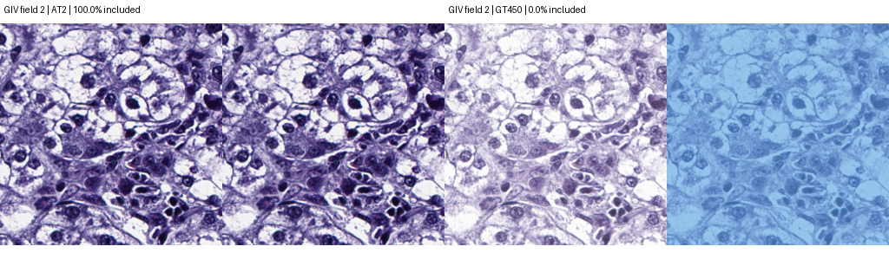
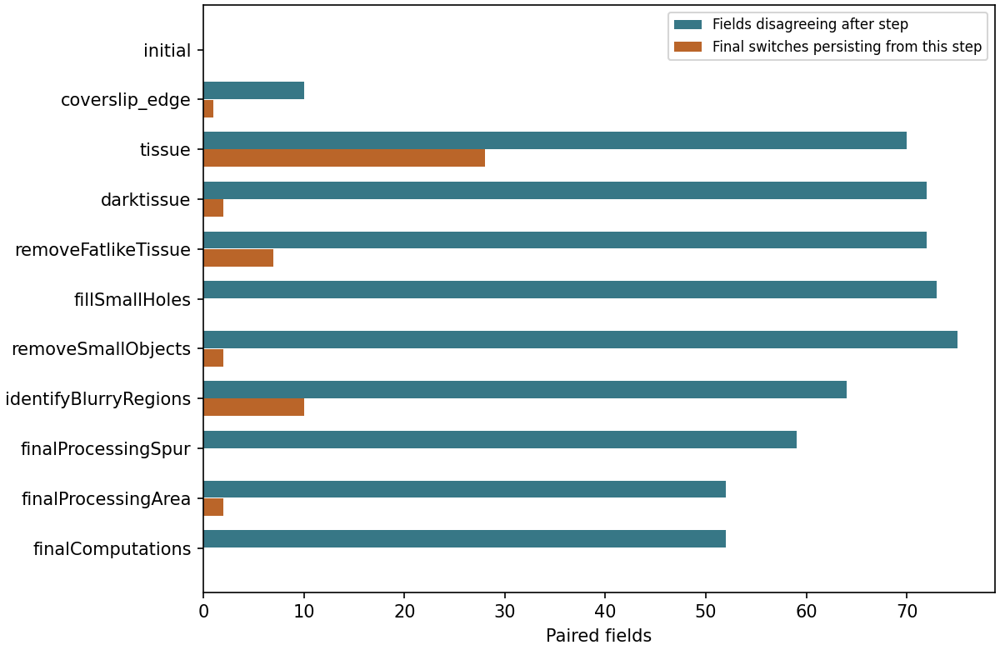
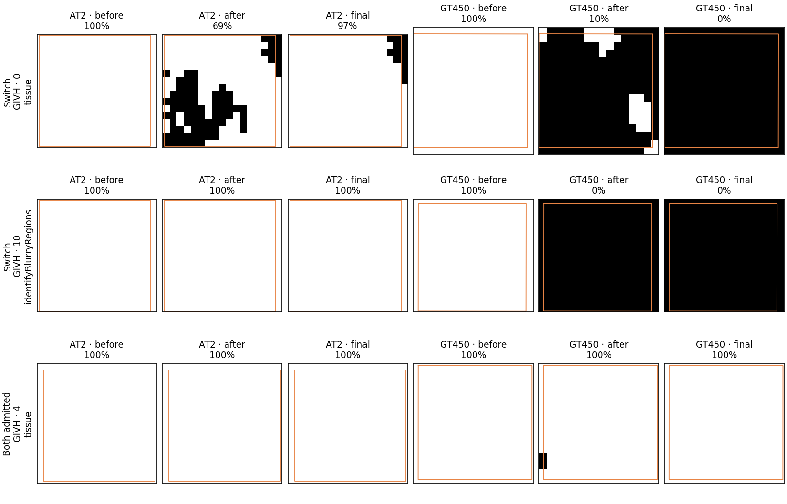

When the same tissue changes QC status across scanners
In 13 human H&E tissue-array sections from PLISM, 52 of 156 registered sites (33.3%) switched field inclusion between AT2 and GT450 scans under the same HistoQC default configuration. There were 47 AT2-only sites, five GT450-only sites, four admitted on both scans and 100 excluded on both. Section-specific disagreement ranged from 0 to 8 of 12 fields.

GIV, field 2. Each scanner is shown as H&E and then with excluded area in blue. The tissue structures align across scans. AT2 admitted 100% of this field and GT450 admitted 0%. Registered crops and mask overlays adapted from Mieko Ochi, Daisuke Komura, Takumi Onoyama and Shumpei Ishikawa, PLISM original slides, CC BY 4.0.Frozen comparison
Twelve single-reference, AT2 tissue locations per section had been specified before the QC study. We reconstructed each native 128 µm field on both whole-slide scans, including three prior optical-coverage exclusions. Registration reproduced the 306 retained crop images exactly. Whole-slide masks were computed with the default HistoQC configuration and one shared set of classifiers. A field entered when at least half of its polygon area intersected the final usable-tissue mask. The cutoff is a downstream study choice. Each section received equal weight. Different tissue was admitted on 12 of 13 sections.
Inclusion decisions at 12 paired sites per section| Section | Both in | AT2 only | GT450 only | Both out | Switched |
|---|
| GIV | 0 | 7 | 1 | 4 | 8/12 |
|---|
| GIVH | 1 | 4 | 0 | 7 | 4/12 |
|---|
| GM | 0 | 1 | 0 | 11 | 1/12 |
|---|
| GMH | 1 | 4 | 0 | 7 | 4/12 |
|---|
| GV | 2 | 4 | 0 | 6 | 4/12 |
|---|
| GVH | 0 | 7 | 0 | 5 | 7/12 |
|---|
| HR | 0 | 0 | 4 | 8 | 4/12 |
|---|
| HRH | 0 | 8 | 0 | 4 | 8/12 |
|---|
| KR | 0 | 1 | 0 | 11 | 1/12 |
|---|
| KRH | 0 | 3 | 0 | 9 | 3/12 |
|---|
| LM | 0 | 4 | 0 | 8 | 4/12 |
|---|
| LMH | 0 | 4 | 0 | 8 | 4/12 |
|---|
| MY | 0 | 0 | 0 | 12 | 0/12 |
|---|
| All sections | 4 | 47 | 5 | 100 | 52/156 |
|---|
Exploratory step trace
We replayed the unchanged ordered pipeline, recorded each field after every step and required all 26 final PNG SHA-256 hashes to match the original outputs. All matched. For each of the 52 switches we traced the first appearance of its final direction and the step from which that direction persisted uninterrupted. The largest count was 28 at LightDarkModule.getIntensityThresholdPercent:tissue. Among final switches, 1 lost their eventual direction after first displaying it, and 0 displayed the opposite direction at some point. Among the other 104 sites, 51 disagreed temporarily and finished concordant.
| HistoQC operation | Final direction first appeared | Final direction persisted from here |
|---|
| LightDarkModule.getIntensityThresholdPercent:tissue | 28 | 28 |
| BlurDetectionModule.identifyBlurryRegions | 10 | 10 |
| MorphologyModule.removeFatlikeTissue | 8 | 7 |
| LightDarkModule.getIntensityThresholdPercent:darktissue | 2 | 2 |
| MorphologyModule.removeSmallObjects | 1 | 2 |
| BasicModule.finalProcessingArea | 2 | 2 |
| ClassificationModule.byExampleWithFeatures:coverslip_edge | 1 | 1 |

Blue bars count all discordant fields at that step. Orange bars count the subset of final switches whose uninterrupted run began there. The final-stage bar shows the frozen primary count.

White pixels are admitted by the mask, black pixels excluded. The outline encloses the registered field; percentages use fractional pixel area at its edges. Examples illustrate frequent stages, with a field admitted on both scans for context. These are binary mask windows from the whole-slide run.
Why two whole-slide masks were empty
The final area filter removes four-connected components smaller than 10,000 working-mask pixels, about 0.656 mm² on these AT2 scans and 0.703–0.704 mm² on GT450. Below are the actual component sizes immediately before the operation and the total positive pixels remaining afterward. Upstream steps determine what reaches this filter.
| Scan | Components before | Largest before (px) | Total before (px) | Total after (px) |
|---|
| KR_GT450.svs | 29 | 8029 | 22448 | 0 |
| MY_GT450.svs | 8 | 7222 | 9203 | 0 |
The two sections with an empty GT450 mask contributed only one of the 52 switches. In the other 11 sections, 51 of 132 sites switched. Forty of the 52 switches had at least 90% area admitted on one scan and at most 10% on the other. These are descriptive checks added after the freeze.
Scope
The result describes field selection conditional on a TMA, a reference-side sample and a particular ordered QC pipeline. These sections share tissue origins. A change at one operation can depend on everything earlier in the pipeline. The trace cannot establish which scan was more faithful, whether one scanner is generally preferable, or whether a rejection was warranted. Independent blinded review would address the last question.
Reproduction instructions · Per-section results · All steps · All 52 switches · Temporary disagreements · Component counts · Matched mask hashes
PLISM original whole-slide dataset · HistoQC source revision